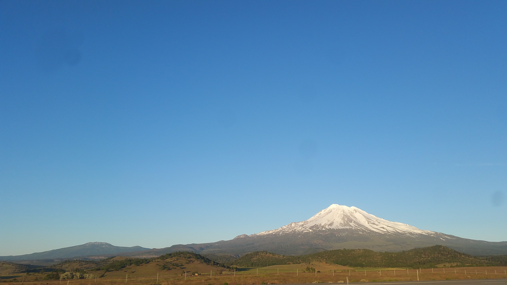
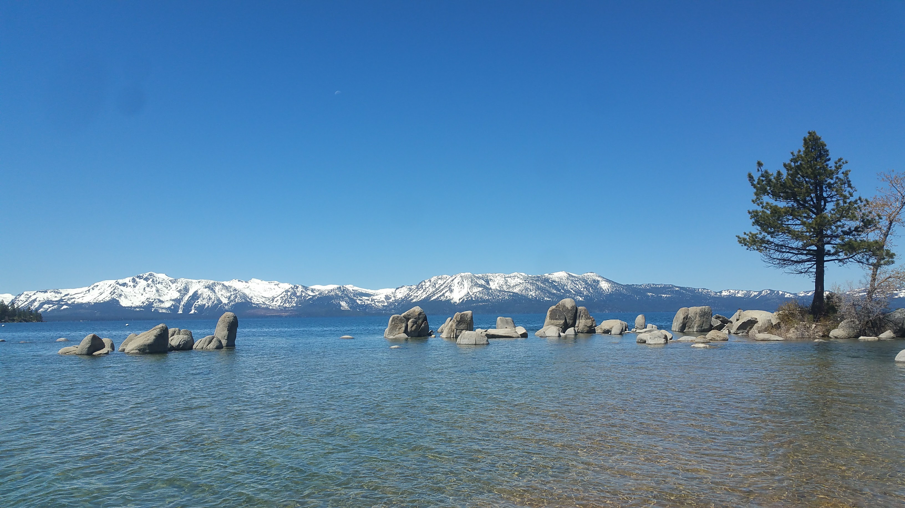
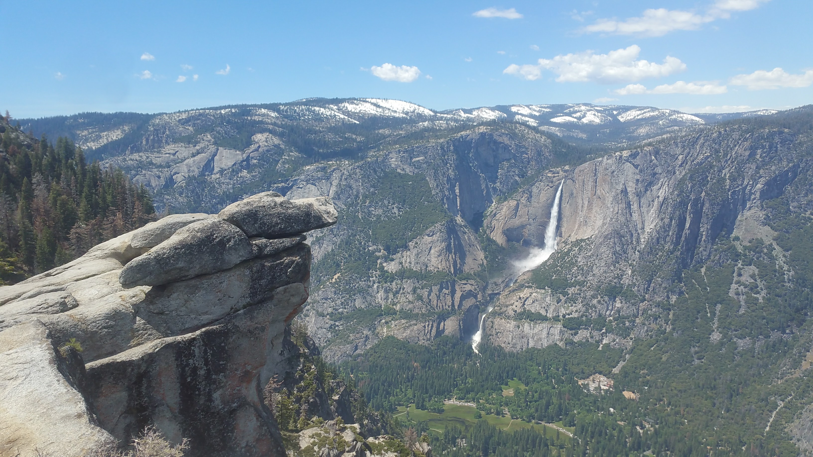
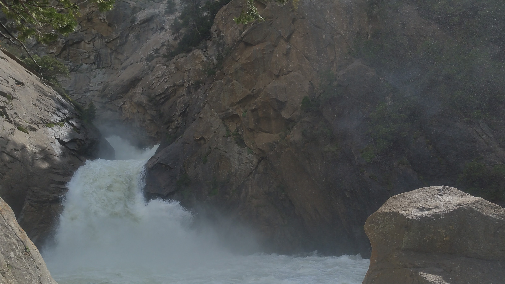
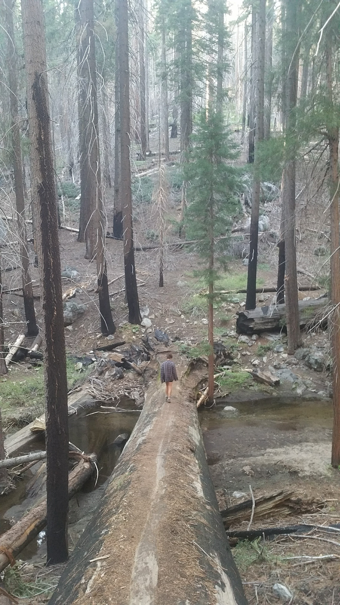
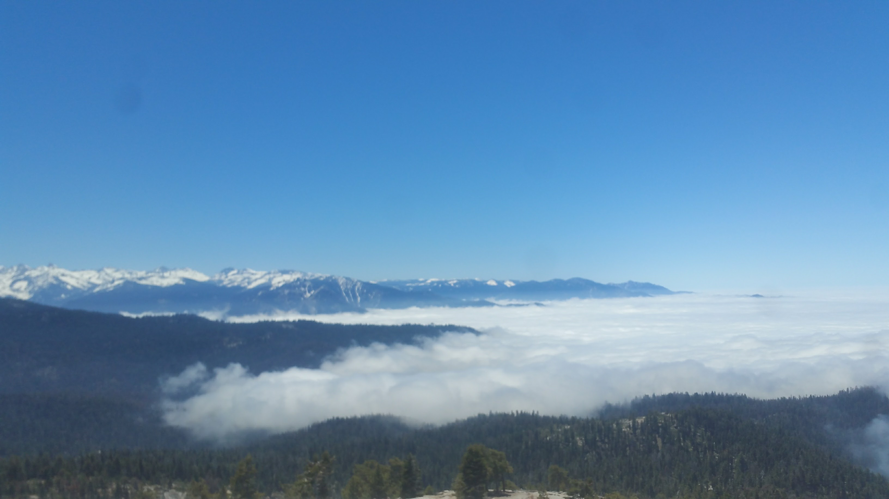
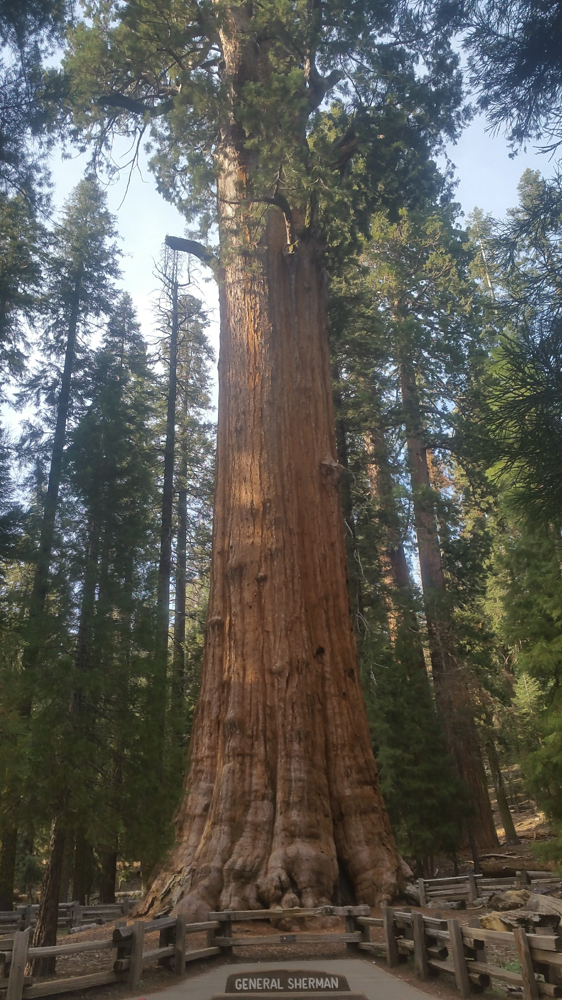
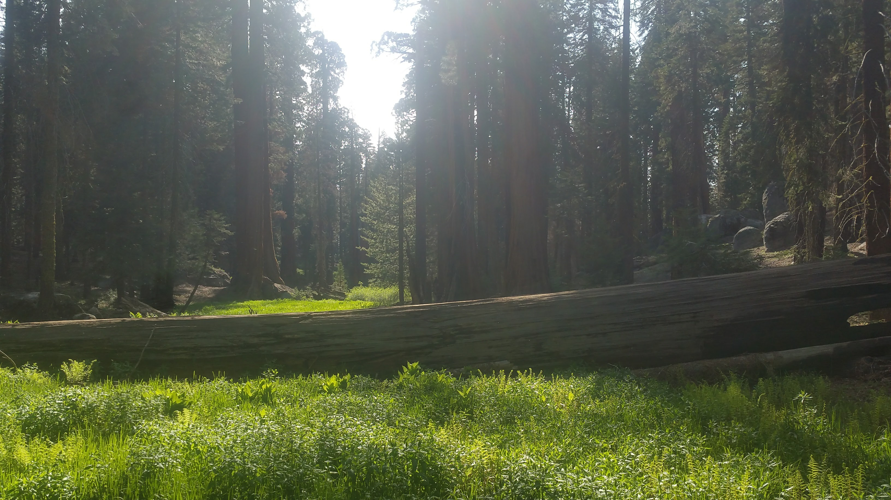
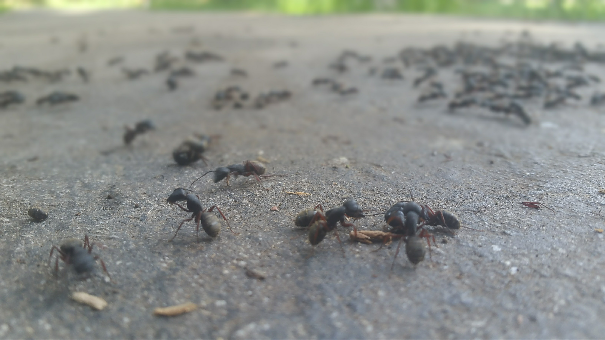
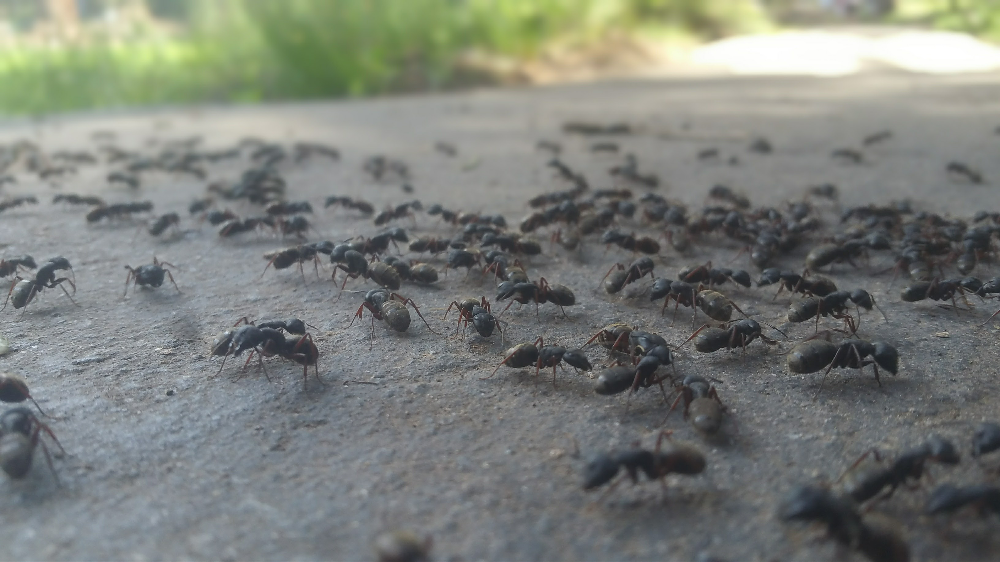

Hey hey, back again! These days we're back in Southern California, spending some time with my family before the final leg of our adventure. It's been a very lovely few days of sunshine and heat, with lots of kitchen-cooked meals (we missed them so!)
During our time in Oregon - visiting Sam, Danielle, Allie, Charlie, Frank, Mochi, Bebe & Mama, and so many other beautiful creatures - we happened to visit another hot spring! So I've updated that post. After spending a magical week with the lovely people and animals of TKO Reserve, it was time for us to return to Cali for the Sierra Nevadas we longed for. Appropriately after our visit on the farm, our first major destination was Weed, CA.
Mount Shasta, in Weed
Our real destination was Lake Tahoe, on the Nevada/California border. We wanted to drive along its shores for a bit, and chose to do that on the Nevada side (spending a pair of nights back in the real desert), after we passed through Reno and Silver City. It was still sort of the off-season, too late for skiing and too early for summer, but the lake seemed far more tranquil than either of us expected. The waters were clear as crystal.
From Tahoe, it was Yosemite ho! We took a few days driving down to the park, taking in the unique scenery of eastern California, and found ourselves there on a Friday. Doy, not the best timing. We were told by an employee of the park, some 4 miles from the entrance: "Yeah, right now it will take you about 2 to 3 hours to get into the Yosemite Valley." Hours?! No, thank you.
So we went down the Merced River a bit, finding a good spot in the National Forest to take a swim. We actually started finding flakes of gold in the river! Gold country indeed.


Our private swim spot for the afternoon. Mind the poison oak!
Later that day, we ended up running into Steve and Jamie, my friends from high school that were also visiting Yosemite! They couldn't talk for long, but it was a total mindfuck.
That evening we camped near the south entrance to Yosemite. In the morning, the line going into the park stretched for miles! Screw this, I decided, and we went swimming (in a new spot) for another afternoon. Yosemite would have to wait until the weekdays. Unfortunately, the weekends weren't much better.
But we had killed enough time! It was Yosemite or bust, and into the park we went. Despite the crowds, and the lines...

The Yosemite Valley is incredible.
We spent the day admiring the powerful beauty of Yosemite's waterfalls (and trying to find parking), and decided that we would return the park again someday with the intent to explore it fully. But late May was not the season to _escape_ to Yosemite.

But seriously, the waterfalls were incredible
We were hardly bothered, for King's Canyon and Sequoia National Parks were our real destination in the Sierra Nevadas. Stopping briefly in Fresno for showers already a week overdue, we struck west up the King's Canyon highway and took it all the way to Road's End.

Along our journey we met General Grant!
General Grant is a giant sequoia tree (Sequoiadendron giganteum), and is the second largest tree in the world! More on the largest later. We explored Grant's Grove, a cluster of old growth, giant sequoias averaging over 1,500 years old! These trees are incredible; their bark is more similar to coconut fiber than the bark of any other tree I've seen before, they burn tremendous portions of their bodies yet continue to grow, and they are just so. darn. BIG!

Pretty lady, for scale
By the time we approached Road's End, hours past General Grant, the temperature had climbed considerably--as had the bugs. We searched frantically for a campsite that gave us reproach from the many mosquitoes (and tarantula!!!) we found on the valley floor, before settling at a place in the National Forest, overlooking part of the Canyon. We would come to Road's End the next day.
And so we did! And from there we saw prescribed fires along the Canyon floor, on our hike up to the very aptly-named Mist Falls. After taking a quick shower (both in the falls and in the public showers offered by the park afterward!) we took some more showers in Grizzly Falls and Roaring River Falls--which were also aptly-named. The backcountry of King's Canyon was closed still - as was the cavern in the National Forest - so we camped at the same spot as the night before.
Roaring River Falls
The next morning we got the chance to explore parts of the Converse Basin Grove, which had been closed on our descent into the canyon a few days prior. Much of Converse Basin had been logged in the late 1800s--killing thousands of old-growth trees, most thousands of years old--off which the loggers made no profit. The trees themselves are unsuitable for lumber, and their dry, splintering nature made them fall short of the imagined cash-cow. It was troubling to think about greed on such an unwavering scale. Human beings, if given any purpose, are the protectors and shepherds of this world. How anyone could kill such ancient creatures--because trees are creatures--for such a short-termed end like wealth is beyond me. I feel we are blessed that the Parks system was established to protect what few sequoias (and other natural, national treasures) remain.
In Converse Basin we had the chance to meet the "Chicago Stump", formerly the Noble Tree. The stump of this tree was over 30ft high, at least 10ft wide. The bark had charred some, but it had not a spot of mold or growth upon it, as though the tree had been frozen in time since it's cutting-down. It was an intensely emotional thing to see, and felt quite overlooked by the average visitor to the parks.
From there we headed to Redwood Mountain Grove, the densest grove of new-growth giant sequoias (still very large) in the world. We skirted the canyon in the grove, seeing hundreds of giant sequoias before descending into the canyon itself briefly, then climbing the other side. There was the Hart Tree (the only old-growth left in Redwood Mountain Grove), Bridge Tree, and a Tunnel Tree.
Bridge Tree
We also discovered one of the many unique natives to the Sierra Nevadas, the snowplant!

They are plants, not fungi, but parasitic! Feeding off of the mix of bacteria, fungi, and plants in the soil, "snow plants" got their name due to their ability to flower even in feet of snow.
It's crazy the friends you'll meet on a trip like ours. The morning after our Redwood Mountain dayhike, we ran into a van-dwelling couple from Massachusetts! Aaron and Chelsea were from Boston, moving to Denver but first doing a trip like ours. We immediately clicked, and joined them for a morning hike up Little Baldy. The weather played along beautifully.
After we went our separate ways, Lacey and I entered and explored Sequoia National Park! Disappointed to hear about the similarly snow-covered backcountry (although it is good for the sequoia trees!) our first hike was a little one to Tokopah Falls. It was Memorial Day Weekend now, and the crowds were growing. We were hoping to not let it deter us again.
Sadly, it did. While we did get to meet General Sherman, the largest (by weight and volume) tree/living thing on earth, the crowds became endless after our hike through the Giant Forest. However, on that hike we got to meet the Congress Grove, the House Grove, the Chieftain Sequoyah, and many other old-growth sequoias. So we made the best of it.
General Sherman (well, most of him)
One of the many, picturesque meadows of Sequoia NP
We decided to flee the crowds for the long weekend, and returned to Fresno. We found the best tacos on planet earth at Tacos Tijuana (IF YOU ARE IN FRESNO, GO THERE), which we returned to many times in the following days. We also made a handful of friends among the locals of nearby Sanger (including a dude named Tyler!), who were very friendly to us strangers. It was a nice experience to spend some time talking to locals - rather than fellow travelers - and get a feel for an area that I know nothing about.
After the weekend we returned to Sequoia! Our first major destination was Crystal Cavern, a calcite cave about 3 miles long. Our tour guide was also from Massachusetts, and went to Smith College the same time I was at UMass! The remaining afternoon was spent exploring the Giant Forest further... where we happened upon the weirdest thing:
 A turf war between ants.
After wandering through more sequoia groves, our last goal was climbing the easily-underestimated Moro Rock. The view was a lot hazier than we would've hoped, but it still paid off:

From Moro Rock we departed Sequoia National Park, and returned to Fresno, but our goal was now Southern California. We crossed the deserts of the Central Valley (passing very close to Death Valley again), spent a day camping in the desert outside of Barstow before returning to my dad's. We've now been in the Coachella Valley for a week, relaxing and doing some chores (Fe got all cleaned and oiled up again, she's ready for the last leg!) in preparation for our last 2-4 month chunk.
So what's next? Well, there are a few answers there, so I'll go in order.
From here, our goal is to return to northern Arizona, in order to see Horseshoe Bend and the North Rim of the Grand Canyon before we trek across the National Parks of Utah. Then it's Colorado, the northern Midwest, Chicagoland, and home again!
From there, things are a little less sure (classic us). Lacey and I are planning on living in Western Mass with our lovely friends/former unofficial roommates, Joanna and Taylor! As well as their friend Molly. However, before that I'm hoping to return to Oregon and visit the TKO Reserve crew once again! I'm hoping to work for them for a couple months before returning to Massachusetts full-time
From there? You'll just have to keep reading, I guess ;)
Mileage: 22800
Weather: Hot, hazy, 102F
Currently listening to my own attempts at house music